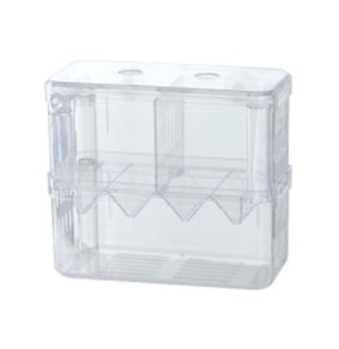
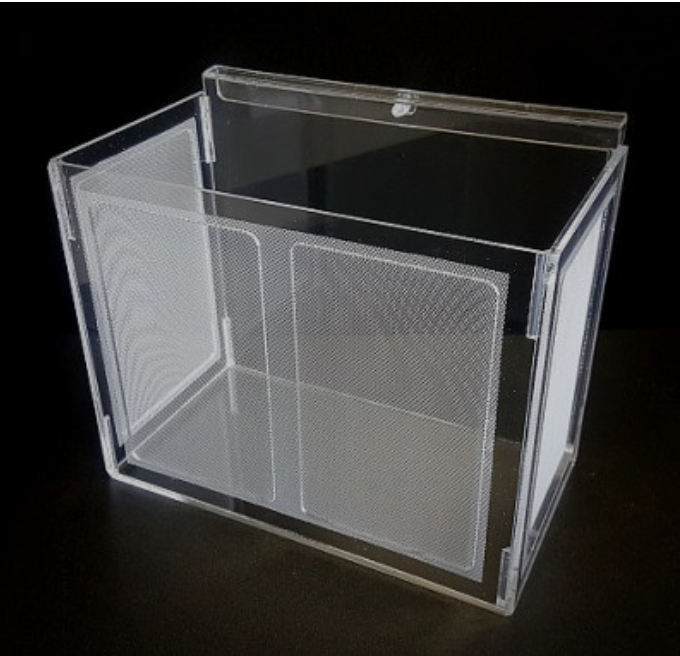
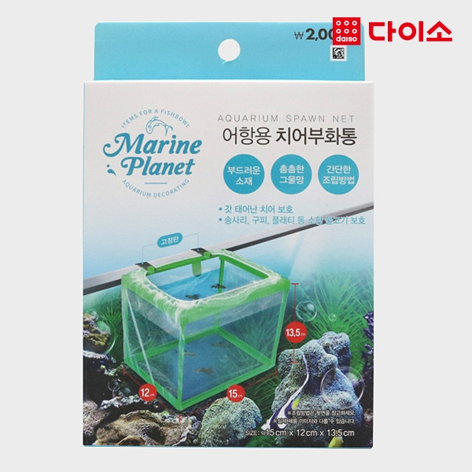
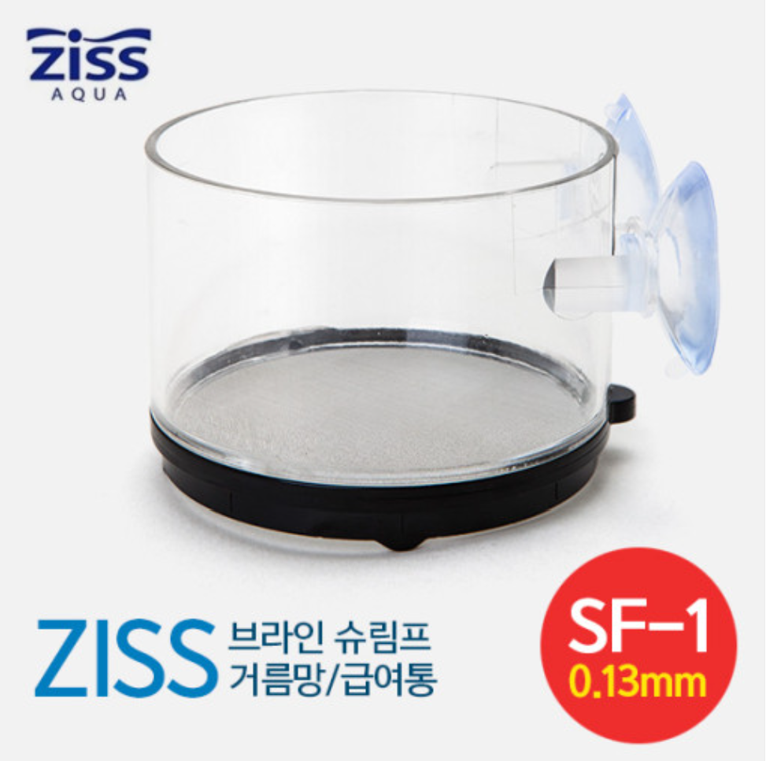

용품후기
이때까지 다양하게 사용했었던 물용품에 대해
개인적으로 느꼈던 사용후기
|  |
아마존 2단 부화통 브랜드 : 아마존 가격대 : 5,360원~ (23.12.02기준) 평점 :★ 후기 : 주변에서 쉽게 구할 수 있고 가격도 무난한 편이지만 크기도 작고 물순환도 잘 되지않아 관리를 잘해줘야한다. |
 |
민성할배 부화통 브랜드 : 민성할배 가격대 : 14,000원~ (23.12.02기준) 평점 :★★★★★ 후기 : 비싸긴하지만 마감도 좋고 삼면이 망사로 이어져 있어 물순환도 좋은 편이다. 특히 바닥에는 1cm 정도의 막혀있는 부분이 있어 환수를 할 때 물 높이에 신경을 쓰지 않아도 되서 편리하다. |
|  |
어항용치어부화통(1009897) 브랜드 : 다이소 가격 : 2,000원 평점 :★★★★ 후기 : 뼈대를 제외한 전면이 망사로 되어있어 물 순환이 좋고 크기가 커서 공간을 많이 차지하지만 그만큼 크거나 많은 물고기를 격리할 수 있어서 좋다. |
 |
지스 브라인슈림프 거름망/급여통 [SF-1 / 0.13mm] 브랜드 : 지스 가격대 : 6,000원~ (23.12.02기준) 평점 : ★★★ 후기 : 원래는 거름망이지만 미세할 정도로 작은 치어통으로 쓰기도 하는데 망이 촘촘하고 바닥에 있어 물 순환이 쉽지는 않아 신경을 많이 쓰면서 물 흐름을 신경써줘야 한다. |